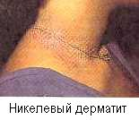
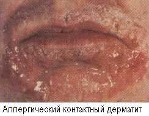

Гиперчувствительность замедленного типа (ГЗТ)
Прежде всего следует еще раз заметить, что деление аллергических реакций на клеточные и гуморальные весьма условно. Как при ГНТ, так и при ГЗТ (реакции IV типа), во взаимодействиях принимают участие и гуморальные, и клеточные компоненты. Имеются поздние проявления гиперэргических реакций немедленного типа (см. выше), которые по времени укладываются в интервал, ранее безусловно отводившийся для ГЗТ (18-48 час.).Однако при ГЗТ решающую роль играют клеточные реакции. Так что ГЗТ - опосредованная Т-лимфоцитами иммунологическая реакция, проявляющаяся в виде воспаления в месте попадания в организм антигена. Для диагностики ГЗТ используются внутрикожные аллергопробы и кожно-бляшечный тест, а также различиные методы, основанные на открытии присутствия и оценке количества лимфокинов (реакция торможения миграции лейкоцитов, реакция бласт-трансформации).
Впервые клинику ГЗТ наблюдал Э.Дженнер (1798), а научно феномен ГЗТ был описан Р.Кохом в 1890г. как “местное воспаление и общая температурная реакция в ответ на введение больным бугорчаткой туберкулина”. Одна из основных черт ГЗТ - возможность перенесения сенсибилизации от чувствительного донора к интактному реципиенту только с помощью живых сенсибилизированных лимфоцитов (К.Ландштейнер и А.М.Чейз, 1942). После антигенной стимуляции, индуцирующей преимущественно клеточный иммунитет, в тимус-зависимых паракортикальных зонах лимфоузлов наблюдается бласт-трансформация лимфоцитов, а затем, в свою очередь, образуются средние и малые лимфоциты. Эти сенсибилизированные Т-лимфоциты и играют центральную (хотя и не единственную) роль в клеточном иммунитете. В 1925 г. Х..Цинссер пришел к заключению, что реакция подобного типа - феномен, наблюдающийся при всех бактериальных инфекциях. В дальнейшем Т-лимфоцитарный механизм иммунитета был обнаружен и при всех вирусных заболеваниях, он также составляет основу противоопухолевой защиты.
Как известно, форма иммунного ответа в многом определяется видом антигена, способом его введения и дозой. Так, небольшие дозы антигена, особенно введенные внутрикожно, вызывают, как правило, клеточный иммунитет. После внутривенного введения клеточный иммунитет практически не развивается. Полный адъювант Фрейнда (минеральное масло + микобактерии) усиливает и клеточный, и гуморальный иммунитет. Внутрикожное введение с адъювантом, произведенное после внутривенного, вызывает образование антител.
ГЗТ легко развивается и достигает высокой степени выраженности по отношению к тем возбудителям, которые способны к длительному внутриклеточному персистированию или к антигенам и гаптенам, длительно остающимся в очаге реакции, без резорбции. Живые микроорганизмы вызывают более сильную реакцию, чем убитые. Патогенные штаммы действуют сильнее, чем непатогенные. Корпускулярные антигены, агрегированные белки, неметаболизируемые неорганические гаптены (например, металлы) легко вызывают ГЗТ, тогда как сенсибилизация к растворимым белкам возможна только или при введении со стимулятором, или при внутрикожной инъекции. Из клеточных структур наиболее антигенны компоненты клеточных стенок - белки и гликопротеины. Способность к "сильному" ГЗТ-ответу наследуется доминантно.
Принято считать, что реакции типа ГЗТ имеют особое значение при инфекциях, вызванных некоторыми патогенами, персистирующими в фагоцитирующих клетках, а также в реакциях отторжения трансплантата и некоторых аутоиммунных заболеваниях. При ГЗТ возможны изменения в любых органах и системах, в зависимости от локализации паразита, возбудителя или места действия образующихся антигенов.
Выделяют три разновидности реакций ГЗТ ( По Р.Бэрнетсону и Д. Гокроджеру 1994):
контактная гиперчувствительность
гиперчувствительность туберкулинового типа
гранулёматозная гиперчувствительность.
Контактная гиперчувствительность
Типичным примером контактной гиперчувствительности является контактный дерматит (в зарубежной литературе - контактная экзема). Он может наступить при аппликации гаптенов (никель, хроматы, динитрохлорбензол, парафенилендиамин, соединения ртути, некоторые консерванты и лекарства, детергенты, компоненты резины) или антигенов (ядовитый плющ, американский ядовитый дуб) на кожу сенсибилизированного индивида. При первом контакте частицы гаптена (или антиген) проникают в эпидермис. Гаптен создает с эпидермальным белком специфически распознаваемый иммунной системой конъюгат. Эпидермальные клетки Лангерганса фагоцитируют аллерген в базальном слое эпидермиса и мигрируют в паракортикальные зоны региональных лимфоузлов. Они процессируют аллерген и представляют его СD4-положительным лимфоцитам в контексте антигенов ГКГС 2 класса, отчего формируются Т-клетки памяти. Этот процесс занимает не менее 10 дней.

При повторной аппликации специфического аллергена происходит локальная активация Т-лимфоцитов и макрофагов. Происходящее при этом высвобождение лимфокинов запускает тот патологический процесс, который клинически проявляется дерматитом.
Повторное представление аллергена клетками Лангерганса Т-клеткам памяти ведет к синтезу последними ИЛ-2, ИЛ-3, g-интерферона и гранулоцитарно-моноцитарного колониестимулирующего фактора (ГМ-КСФ). ИЛ-2 оказывает аутокринный эффект на T-клетки, вызывая их пролиферацию. Лимфоциты и клетки Лангерганса выделяют ФНО. Затем, g-интерферон и ФНО стимулируют кератиноциты эпидермиса и эндотелиоциты сосудов дермы, которые вследствие этого экспрессируют молекулы клеточной адгезии (ICAM-1 ), а на вторые сутки ответа - и антигены ГКГС 2-го класса. Активированные кератиноциты выделяют ИЛ-1, ИЛ-6, ГМ-КСФ. Лимфоциты и макрофаги испытывают хемоаттракцию к месту реакции, благодаря действию набора цитокинов, и оседают в эпидермисе и дерме, прикрепляясь своими интегринами (LFA-1) к молекулам ICAM-1. Через 48 часов реакция достигает пика, развивается отек эпидермиса и образующиеся элементы характеризуются дерматологами как везикулы. Через 72 часа сказывается действие противовоспалительных медиаторов, в частности PgE - и клиническая картина подвергается обратному развитию.
|
|
|
|
|
|